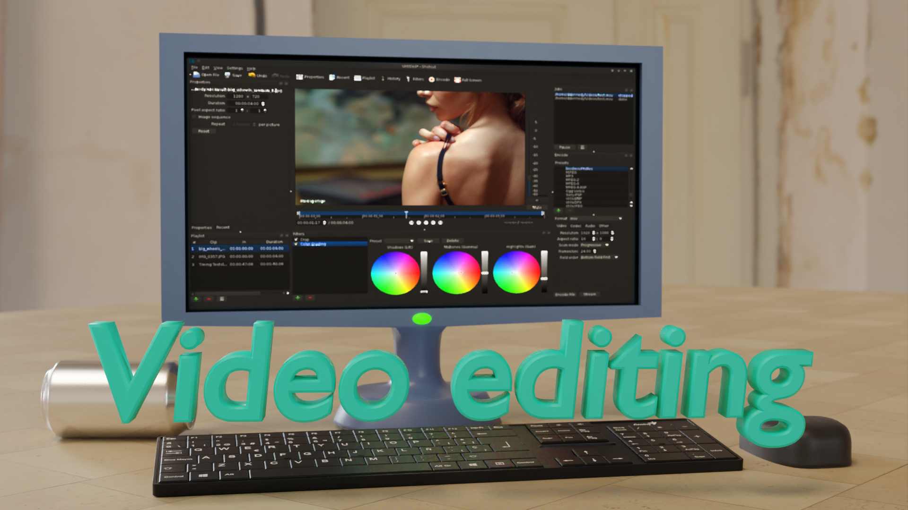

A sample of my works
This is a small video I made with a friend. It's about a hunter that goes on a hunt for an elusive creature but soon realises he's bitten off more than he can chew.
I crafted the video using a mix of Premiere Pro, After Effects, Photoshop, and Audacity. Take the rat, for instance; I designed it in Photoshop, then seamlessly integrated it into the video using Premiere Pro, it seamlessly blended into the scene. The vintage VHS style you see throughout the video? That touch was added using After Effects, bringing a nostalgic vibe to the overall aesthetic. To achieve the desired VHS aesthetic in the audio, I turned to Audacity. Specifically, I utilized the software to craft authentic crackling sounds reminiscent of an old VHS speaker, enhancing the overall vintage vibe I aimed to convey.